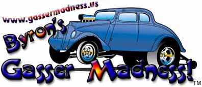
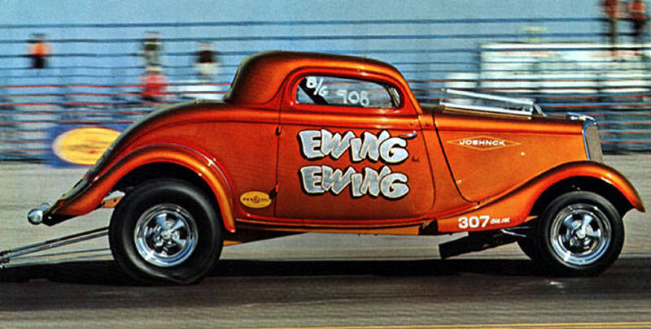

~ Byron's Gasser Madness! ~ 
~ Lost ~
~
Kris Ewing's 34 Ford Gasser ~
Byron, I emailed you a picture of my
old race car, l sure would like to find it! It was sold in 1974 to a guy in
Salt Lake City named Jack or John. Six months later when his men came to
pick up the car, they said he collects cars, but never finishes them, and
they doubted he would ever get to running the 34. Thank you for all your
help, it would really be cool to find that car and get it running again!
Thanks, Kris Ewing

Belairranch@aol.com